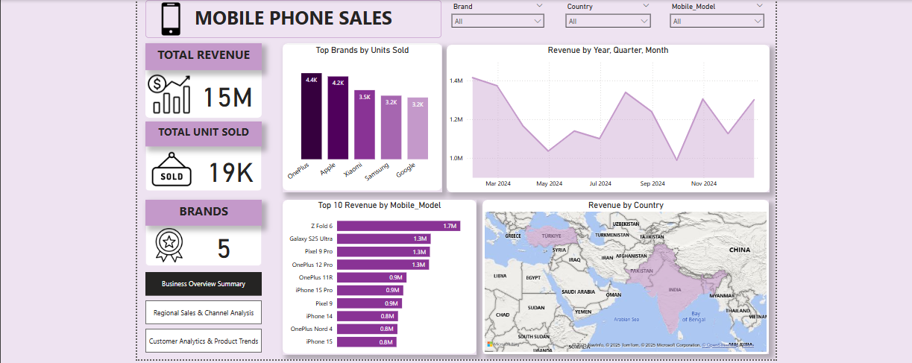

This project involves the development of an interactive Power BI dashboard for a mobile phone store. The dashboard provides deep insights into sales performance, regional distribution, customer demographics, and product preferences..


The goal is to identify unprofitable patterns and simulate strategic changes to improve margins.

This repository contains mySQL solutions to the Cowrywise Data Analyst technical assessment. It includes SQL queries to answer business-driven questions, with an emphasis on financial behavior, customer segmentation, and retention analysis.